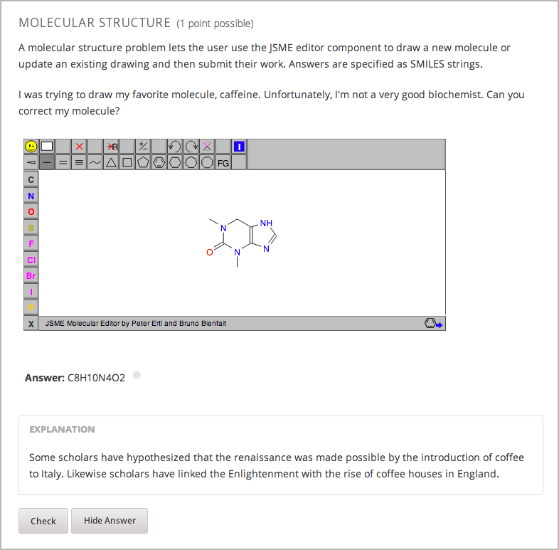

学生可以通过分子编辑器来学习如何创造分子。 分子编辑器允许学生画遵循共价键的形成和形式电荷规则的分子，即使这些分子在化学上是不可能的存在的，不稳定的，或者不存在于自然界之中。 如果学生试图提交一个不可能的化学结构，分子编辑器便会发出警告。
分子编辑器集成了两个工具:由Peter Erl和Bruno Bienfait开发的JSME分子编辑器, 以及由Jmol开发的基于JavaScript的分子浏览器JSmol。 (你不需要下载这两个工具，编辑器自动使用这两个程序) 获得更多JSME分子编辑器的信息， 请点击 JSME Molecule Editor. 获得更多关于JSmol分子浏览器的信息，请点击`JSmol <http://sourceforge.net/projects/jsmol/>`_.
你需要下面的文件来创建一个分子编辑器：
要下载包含所有这些文件的.zip文件，请前往 http://files.edx.org/MoleculeEditorFiles.zip.
Note
该工具启动时出现的分子是多巴胺分子。 如果想要使用不同的分子, 只需从 BioTopics 网站的 list of molecules 上下载你需要分子对应的.mol文件，然后， 上传 .mol 文件到你课程中的 文件和上传 页面，再修改示例代码中的 “dopamine.mol” 为你所要的分子的 .mol 文件名即可。
要创建上面显示的图像中的分子编辑器，你需要一个HTML组件以及一个问题的组件。
- 在你要创建问题的创建问题的位置，点击 添加新组件 下面的 HTML ， 然后再点击 HTML.
- 点击出现组件中的 编辑.
- 在组件编辑器中，粘贴下面的HTML组件代码。
- 做出你想要的任何更改，然后单击 保存.
- 点击HTML组件下方的 添加新的组件 中的 问题 再点击 高级空白问题 。
- 点击出现组件中的 编辑 。
- 在组件编辑器中，粘贴下面的问题组件代码。
- 点击 保存。
你需要一个HTML组件和一个问题组件来创建分子编辑器。
<h2>Molecule Editor</h2>
<p>The molecule editor makes creating and visualizing molecules easy. A chemistry professor may have you build and submit a molecule as part of an exercise.</p>
<div>
<script type="text/javascript">// <![CDATA[
function toggle2(showHideDiv, switchTextDiv) {
var ele = document.getElementById(showHideDiv);
var text = document.getElementById(switchTextDiv);
if(ele.style.display == "block") {
ele.style.display = "none";
text.innerHTML = "+ open";
}
else {
ele.style.display = "block";
text.innerHTML = "- close";
}
}
// ]]></script>
</div>
<div>
<style type="text/css"></style>
</div>
<div id="headerDiv">
<div id="titleText">Using the Molecule Editor<a id="myHeader" href="javascript:toggle2('myContent','myHeader');">+ open </a></div>
</div>
<div id="contentDiv">
<div id="myContent" style="display: none;">
<p>In this problem you will edit a molecule using the molecular drawing program shown below:</p>
<img alt="" src="/static/MoleculeEditor_HTML.png" /></div>
</div>
<p> </p>
<div id="headerDiv">
<div id="titleText">Are the molecules I've drawn chemically possible?<a id="IntroductionHeader" href="javascript:toggle2('IntroductionContent','IntroductionHeader');">+ open </a></div>
</div>
<div id="contentDiv">
<div id="IntroductionContent" style="display: none;">
<p>The chemical editor you are using ensures that the structures you draw are correct in one very narrow sense, that they follow the rules for covalent bond formation and formal charge. However, there are many structures that follow these rules that are chemically impossible, unstable, do not exist in living systems, or are beyond the scope of this course. The editor will let you draw them because, in contrast to the rules of formal charge, these properties cannot be easily and reliably predicted from structures.</p>
<p>If you submit a structure that includes atoms that are not possible or are beyond the scope of this course, the software will warn you specifically about these parts of your structure and you will be allowed to edit your structure and re-submit. Submitting an improper structure will not count as one of your tries. In general, you should try to use only the atoms most commonly cited in this course: C, H, N, O, P, and S. If you want to learn about formal charge, you can play around with other atoms and unusual configurations and look at the structures that result.</p>
</div>
</div>
<div id="ap_listener_added"> </div>
<problem>
<p>The dopamine molecule, as shown, cannot make ionic bonds. Edit the dopamine molecule so it can make ionic bonds.</p>
<p>When you are ready, click Check. If you need to start over, click Reset.</p>
<script type="loncapa/python">
def check1(expect, ans):
import json
mol_info = json.loads(ans)["info"]
return any(res == "Can Make Ionic Bonds" for res in mol_info)
</script>
<customresponse cfn="check1">
<editamoleculeinput file="/static/dopamine.mol">
</editamoleculeinput>
</customresponse>
<solution>
<img src="/static/MoleculeAnswer.png"/>
</solution>
</problem>
问题 2
<problem>
<p>The dopamine molecule, as shown, cannot make strong hydrogen bonds. Edit the dopamine molecule so that it can make strong hydrogen bonds.</p>
<script type="loncapa/python">
def grader_1(expect, ans):
import json
mol_info = json.loads(ans)["info"]
return any(res == "Cannot Make Strong Hydrogen Bonds" for res in mol_info)
</script>
<customresponse cfn="grader_1">
<editamoleculeinput file="/static/dopamine.mol">
</editamoleculeinput>
</customresponse>
</problem>
问题 3
<problem>
<p>The dopamine molecule has an intermediate hydrophobicity. Edit the dopamine molecule so that it is more hydrophobic.</p>
<script type="loncapa/python">
def grader_2(expect, ans):
import json
mol_info = json.loads(ans)["info"]
hydrophobicity_index_str=mol_info[0]
hydrophobicity_index=float(hydrophobicity_index_str[23:])
return hydrophobicity_index > .490
</script>
<customresponse cfn="grader_2">
<editamoleculeinput file="/static/dopamine.mol">
</editamoleculeinput>
</customresponse>
</problem>